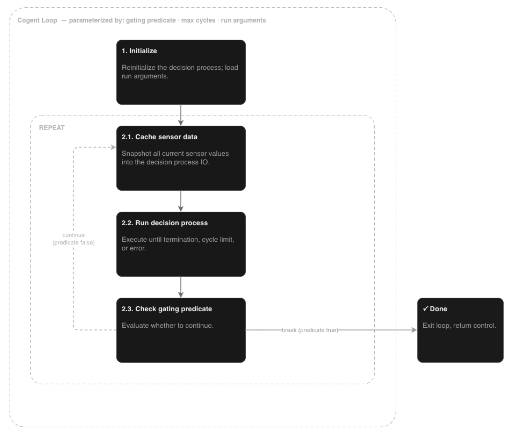

Cognitive Agent (Cogent)¶
A Cogent (short for Cognitive Agent) is an integrated runtime framework designed to drive autonomous decision-making by coupling neuro-symbolic reasoning with environment interaction.
Where does this fit in the Agentic AI tech stack? In Agentic AI design patterns, a
Cogentacts as the Harness / Agent Runtime. It connects directly with the external environment, manages input/output (I/O) routing, and implements the core execution loop controlling the agent’s task performance. (See the Databricks AI Harness architecture for conceptual reference).
What is a Cogent?¶
At its core, a Cogent is a computational entity that continuously executes a three-phase loop:
Perceive: Gathers real-time telemetry from the environment through Sensors.
Decide: Processes incoming information through reasoners to evaluate subproblems and select the next action.
Act: Executes changes back onto the external environment through Actuators.
Neuro-Symbolic Operation¶
Rather than relying exclusively on Large Language Models (LLMs) to handle all reasoning and decision making steps, a Cogent relies on a heterogenous reasoning foundation implementing neural and symbolic AI:
Natural Language Understanding & Generation: Handled via Language Models.
Situational Awareness: Resolved through Graph Reasoning.
Plan Generation: Computed via Automated Planning algorithms.
Orchestration: Managed by a Knowledge-Aware Decision Process (KADP), which dynamically invokes the appropriate reasoners for the task at hand.
As the cognition library grows it will be extended to include algorithms for causal reasoning, spatio-temporal planning, diagnosis and remediation, numerical optimization etc. - all centered out processing structured information repesented via a knowledge graph.
Scientific Principles¶
The architecture of Cogent is grounded in foundational Artificial Intelligence principles, specifically the Intelligent Agent paradigm detailed in Russell & Norvig’s Artificial Intelligence: A Modern Approach (Chapter 2):
PEAS Model (Performance, Environment, Actuators, Sensors): Maintains strict separation between environment interface components (sensors/actuators) and the internal decision cycle.
Neuro-Symbolic AI: Blends statistical probabilistic models (LLMs) with formal, deterministic logic engines (automated planners, graph algorithms) to bound agent behavior with explicit domain constraints.
Why Use a Cogent?¶
Cogent provides an integrated runtime to leverage a broad suite of AI algorithms beyond language models for predictable, verifiable, and autonomous decision-making.
Heterogenous Reasoning Capabilities:
Supported: Natural Language processing, Graph-based situational awareness, Automated Planning.
Planned Roadmap: Spatio-temporal planning, constraint satisfaction, numerical optimization, causal reasoning, automated diagnosis, and repair.
Enterprise Trust & Safety: Relying solely on stochastic LLM generation introduces hallucination risks and unexplainable behavior. Utilizing science-backed, general-purpose reasoning machinery enables developers to build inspectable, provably safe autonomous agents.
Implementation Details¶
A Cogent implements its Perceive-Decide-Act loop by integrating three core components:
A supplied
DecisionProcess(KADP orchestrator)Any number of supplied
SensorobjectsAny number of supplied
Actuatorobjects

Note
Each Sensor and Actuator must be assigned a unique name. This name corresponds directly to its key path within the IOContainer:
Sensors write to
io.i.<sensor_name>Actuators read from
io.o.<actuator_name>
Tip
To simplify I/O mapping and reduce path lookup errors:
A
Sensorcan supply a custom reader function to automatically extract and format raw data from theIOContainer.An
Actuatorcan supply a custom invoker function to supply output commands directly to theIOContainer.